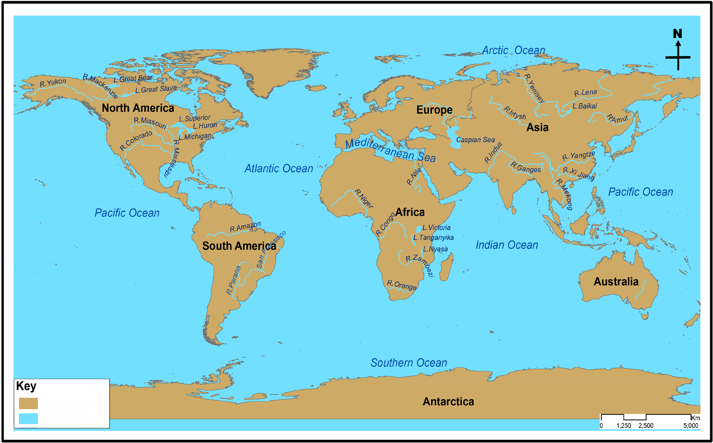

Seas
A sea is a large body of salty water that is surrounded in whole or in part by land. Examples include the Mediterranean Sea, Red Sea, South China Sea, Sea of Japan, and Yellow Sea. The salinity of a sea depends on the temperature and the amount of fresh water from rivers and melting of ice that is discharged into it. High temperature causes high evaporation that increases the salinity, whereas the addition of fresh water decreases salinity due to dilution. Very high salinity occurs in inland seas such as the Dead Sea because of high evaporation and very little input of fresh water that enters them. The Baltic Sea in Europe has very low salinity because several large rivers discharge into it, evaporation is low, and fresh water is added by melting ice and snow. The seas around the poles generally have low salinity because of low evaporation and addition of water from melting ice.
Oceans
An ocean is a large body of salty water surrounding the landmass of the Earth. The major oceans of the world are the Pacific, Atlantic, Indian, Southern and Arctic Oceans (Figure 4.10).

The oceans of the world with their relative sizes are shown in Table 4.1. The Pacific Ocean is the largest in size whereas the Arctic is the smallest ocean in size.